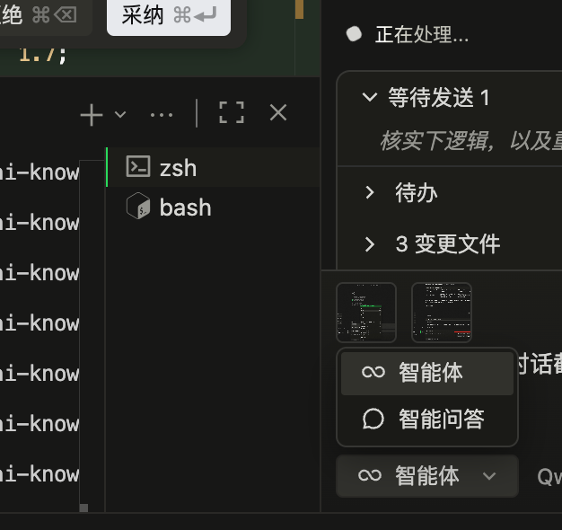
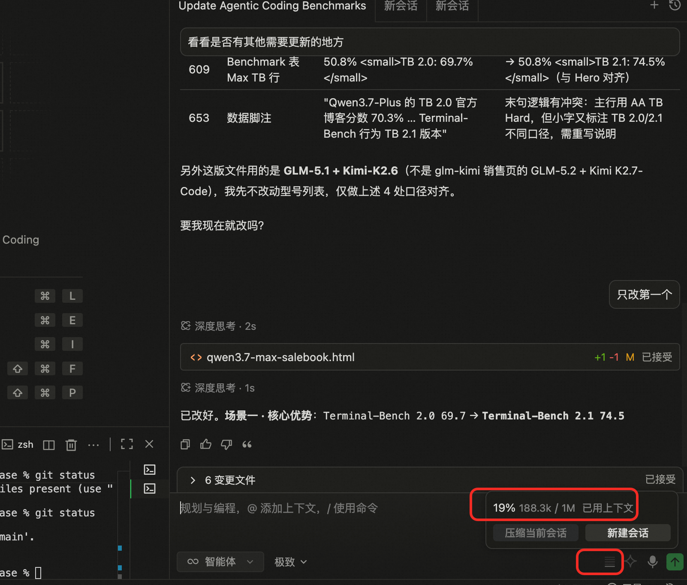
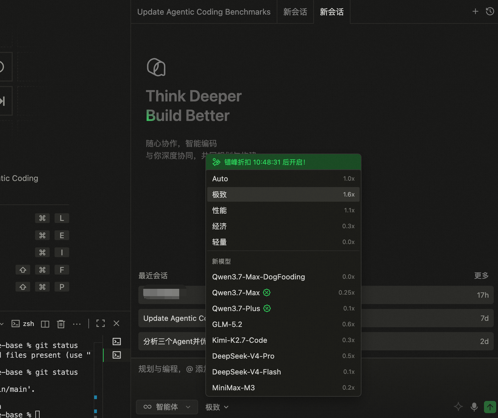

同样的开发产出，Credits 消耗降低 50-70%
| 功能模式 | 50K 上下文 | 200K 上下文 | 适用场景 |
|---|---|---|---|
| 智能问答 / Ask 省 | ~3 Credits/请求 | ~4 Credits/请求 | 读代码、问答、Debug 咨询 |
| Agent 模式 中 | ~7 Credits/请求 | ~12 Credits/请求 | 写代码、改文件、多步操作 |
| Quest Agent 贵 | — | ~50 Credits/请求 | 端到端复杂任务 |
| Quest Experts 贵 | — | ~75 Credits/请求 | 多 Agent 协作长周期 |
智能问答/Ask 模式（~3-4 Credits）只做问答和代码阅读，Agent 模式（~7-12 Credits）会读写文件、执行命令。很多场景智能问答就够了。
| 场景 | 用智能问答（3-4 Credits） | 用 Agent（7-12 Credits） |
|---|---|---|
| 理解一段老代码 | ✅ "这段代码的逻辑是什么？" | ❌ 杀鸡用牛刀 |
| Debug 定位问题 | ✅ "这个报错可能是什么原因？" | ⚠️ 需要直接改文件时才用 |
| 方案选型讨论 | ✅ "Redis 和 Memcached 怎么选？" | ❌ 纯讨论不需要文件操作 |
| 写一个新功能 | ❌ 智能问答无法写文件 | ✅ 需要创建/修改文件 |
| Code Review | ✅ 选中代码 + "帮我 review" | ⚠️ 要批量修改时才用 |

多轮对话会累积上下文，上下文越大，每次请求的 Credits 消耗越高。50K 窗口 vs 200K 窗口，Agent 模式消耗差近 1.7 倍。

Qoder 支持全球 SOTA + 亚太 SOTA 模型，可在对话界面自由切换模型。核心思路：规划和设计用最聪明的模型，执行和测试用性价比模型。
| 开发阶段 | 推荐模型 | 推荐模式 | 原因 |
|---|---|---|---|
| Spec / Plan 设计 | 极致模型 / 其他 SOTA 模型 | 智能问答 | 架构决策不可逆，需要最强推理；设计文档不需要改文件 |
| 代码实现 | DeepSeek-V4 / GLM-5.2 / Qwen 3.7-Max | Agent | 编码能力接近旗舰，价格大幅降低 |
| 日常 Debug | Qwen 3.7-Plus | 智能问答 | 问答式排查，不需要文件操作 |
| 测试生成 / 格式化 | Qwen 3.7-Plus | Agent | 模板化工作无需高端模型 |

AI 搜索文件、阅读文件都会扩大上下文窗口，直接增加消耗。主动提供精确上下文，比让 AI 自己去"探索"省很多。
每次都要重复告诉 AI "用 TypeScript"、"用 pnpm"、"变量名用 camelCase"？把这些写成 Rules，AI 每次自动遵循，不需要在对话中反复说明。
| # | 技巧 | 一句话总结 | 预估节省 |
|---|---|---|---|
| 1 | 智能问答优先 | 能问就别动手，3-4 Credits vs 7-12 Credits | 50-65% |
| 2 | 会话隔离 | 换任务就开新窗口，避免上下文膨胀 | 30-50% |
| 3 | 模型分级 | 设计用极致，代码用 DeepSeek/GLM，测试用 Qwen | 40-60% |
| 4 | 精准引用 | @具体文件 + 选中代码，别让 AI 自己搜索 | 20-30% |
| 5 | Rules + Memory | 项目规范写成 .qoder/rules，减少重复对话 | 一劳永逸 |